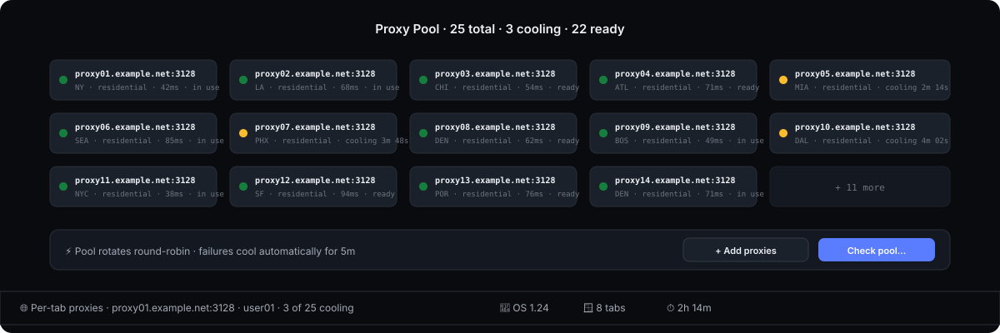
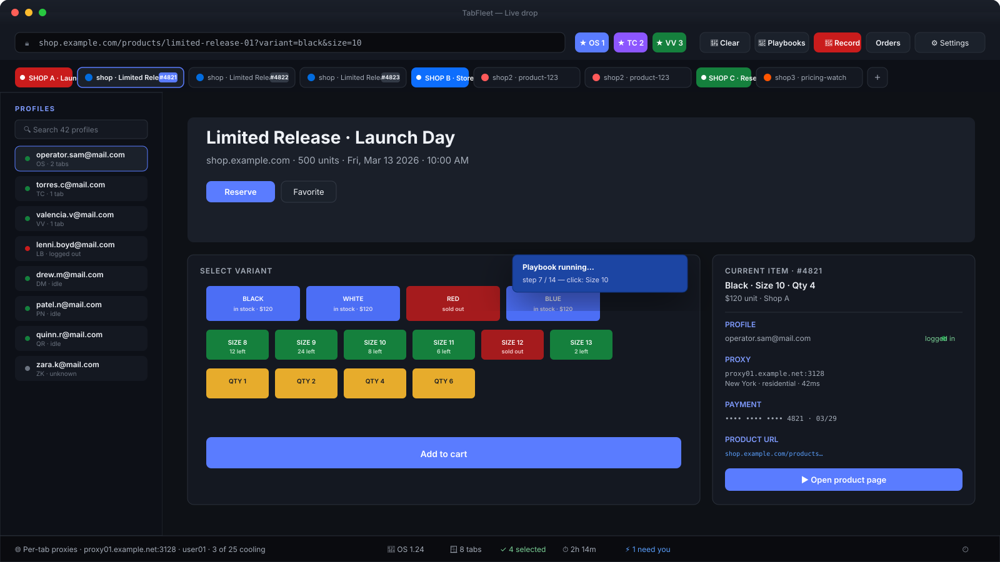
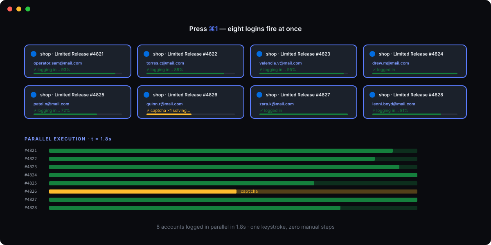
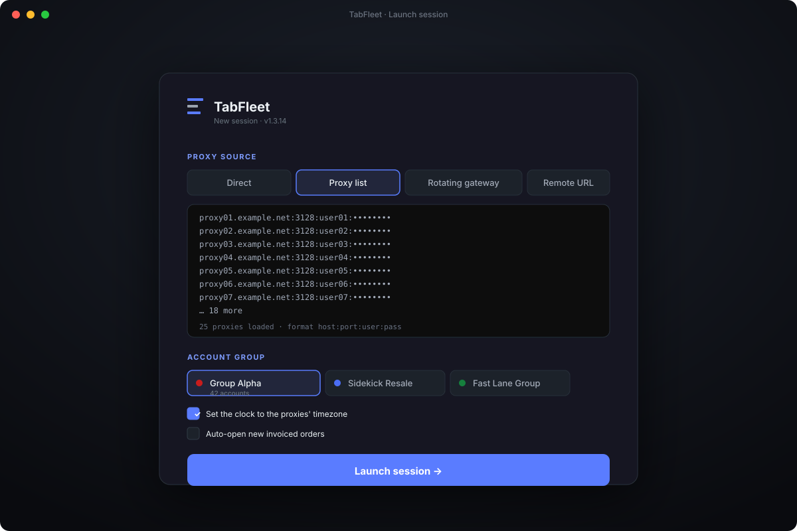
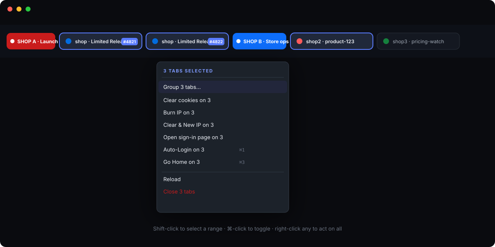
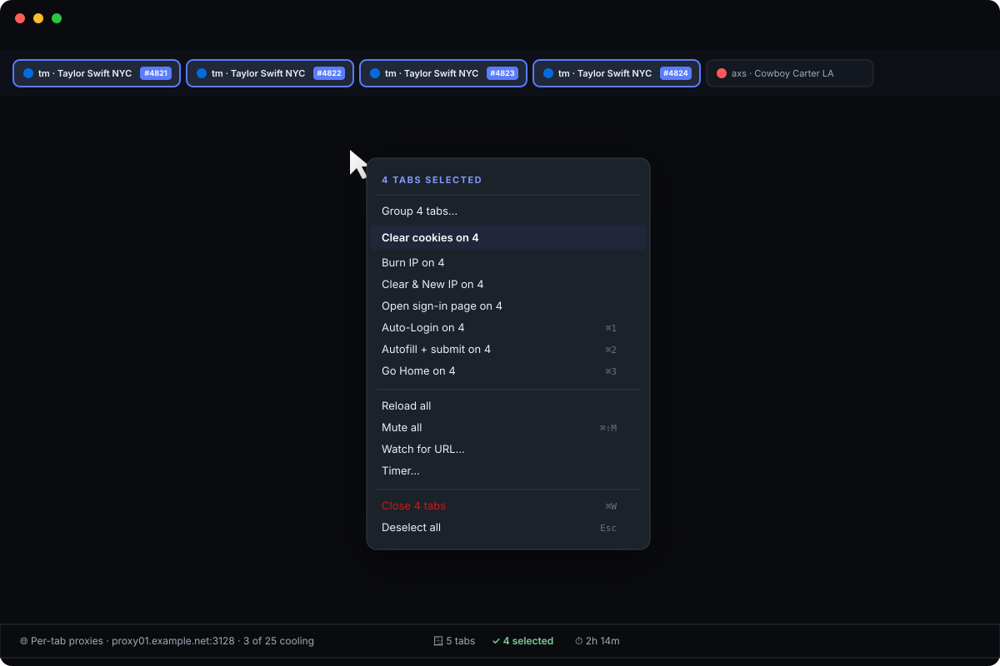

Per-tab proxies with live cooldown
Every tab routes through its own IP. Failures cool a proxy down automatically. One click runs the whole pool through a reputation checker and prunes the datacenter/VPN flags before the drop.

A multi-account browser for people who run serious volume. Unlimited tabs, per-tab proxies, visual record-and-replay automation, encrypted autofill, deep fingerprint stealth so every account looks like a different device. Cheaper than Jancy. No per-IP fees like BrowserJet.

Chrome doesn't know you have 20 accounts. TabFleet does — and treats every tab like its own device.
Every tab routes through its own IP. Failures cool a proxy down automatically. One click runs the whole pool through a reputation checker and prunes the datacenter/VPN flags before the drop.

Do a flow once by hand. TabFleet captures every click and keystroke. Replay it on any account with your variables substituted automatically — no scripting language to learn.
Card, CVV, password, OTP stored encrypted. Copy from TabFleet, paste anywhere else and it's gibberish. Inside TabFleet it decrypts automatically.
UA, WebGL, canvas, fonts, audio, iframe-chrome, webdriver — every surface a bot-detector looks at is rewritten per profile seed. Each account looks like a different machine.
Select 8 tabs. Press ⌘1. Watch 8 logins fire. ⌘2 auto-fills the next page on all 8. ⌘3 sends them all home. The whole operation moves as one.

Connect your point-of-sale, order queue, or custom API. New work items can auto-open tabs with the right context pre-loaded. A status filter keeps your queue clean.
Color-coded groups collapse into a single chip. Group by drop, by venue, by tier. Rename, recolor, close a whole group with one click.
Tell a tab to ping you when it reaches checkout. Set a timer per tab. TabFleet pulses the tab + fires a notification — never miss a captcha.
Pick a proxy source — direct, a pasted list, a rotating gateway, or a remote list URL. Choose which group of accounts this session is for. Everything downstream respects that lock: tabs, autofill, playbooks.

A new tab is a complete browser — its own cookies, proxy, timezone and fingerprint. TabFleet smart-assigns a free profile automatically, so by the time your pointer is on the address bar the right account is already loaded.

Click 🔴 Record, do the flow once by hand, click ⏹ Stop. Open the Playbooks panel, fill in your variables. Click ▶ Run. A new tab opens, navigates the target, performs every step — with the right profile logged in.

Select every tab with ⌘A. Fire a shortcut. Every selected account logs in, autofills, or jumps home in parallel. No more Alt-Tabbing between windows. No more "wait, which account was that?"

Antidetect browsers isolate profiles. Multi-session browsers give you tabs. TabFleet gives you both plus the workflow layer nobody else ships — visual record & replay, bulk shortcuts across selected tabs, encrypted autofill. At a price under every competitor that's close in capability.
| TabFleet | Jancy | BrowserJet | MultiLogin | GoLogin / AdsPower | |
|---|---|---|---|---|---|
| Starting price | $69/mo | $99.99/mo | $89/mo | $7–40/mo | $9–99/mo |
| Tab limit | unlimited | unlimited | 10 (Basic) / 30 (Pro) | unlimited | unlimited |
| Proxies included at base price | bring-your-own, free | bring-your-own, free | +$49 per 20 IPs | bundled, metered | bring-your-own, free |
| Per-tab proxy (not per-profile) | ✓ | ✓ | ✓ | ✗ | ✗ |
| Deep fingerprint stealth | ✓ | ✓ | partial | ✓ | ✓ |
| Visual record & replay (no scripts) | ✓ | scripting language | ✗ | ✗ | ✗ |
| Variable substitution in playbooks | ✓ | via scripting | ✗ | ✗ | ✗ |
| Bulk shortcuts across selected tabs | ✓ ⌘1/⌘2/⌘3 | per-tab only | multi-refresh only | ✗ | ✗ |
| Encrypted card / password autofill | ✓ | ✓ | accounts manager | ✗ | ✗ |
| Proxy reputation checker in-app | ✓ | ✗ | ✗ | bundled only | ✗ |
| External data / order integration | ✓ | ✗ | ✗ | ✗ | ✗ |
| One license, Mac + Windows | ✓ | ✓ | one-PC license | ✓ | ✓ |
| Trial | 7 days of Pro | no trial | no trial listed | free tier (5 profiles) | free tier |
Prices and features as published on competitors' sites. Last checked November 2026.
Jancy is the closest match — same "multi-session browsing" idea, same bring-your-own-proxy, same per-tab proxy model. But Jancy makes you learn their XML-like scripting language to automate anything. TabFleet records your flow by clicking and replays it with your order's seat range substituted — no code, no language to learn. $30/month cheaper.
BrowserJet is a "built-in VPN" browser. It caps you at 10 tabs on Basic, 30 on Pro, and charges $49 extra per 20 IPs. TabFleet has no tab limit, you bring your own proxy pool at no extra cost, and you get a full automation layer BrowserJet doesn't ship at all.
Cheap, yes. But they sell profile isolation, not workflow automation. No playbooks, no bulk shortcuts across tabs, no encrypted autofill, no per-tab proxy (they're per-profile). You'd be duct-taping ten Chrome extensions together to get what TabFleet does out of the box.
Developer tooling — SDKs, Docker, Selenium — made for scrapers who write Python. If that's your workflow, TabFleet isn't for you. If you need to run the same clicking flow on 20 accounts without writing a line of code, TabFleet is.
If your work means running the same flow on 10+ accounts under 10+ different IPs, TabFleet is built for you.
Run multiple Shopify, Amazon, eBay, or Etsy accounts from one window — each walled off with its own session, IP, and fingerprint. Encrypted autofill speeds listing creation and order management across the whole fleet.
Run multiple accounts across affiliate networks, ad platforms, or review sites without the cross-contamination that gets accounts banned. Per-tab fingerprint and proxy means every account looks like a different device from a different place.
Keep client accounts truly separated — Instagram, TikTok, X, Facebook Business. One click to switch between accounts, record posting flows as playbooks, and let anti-bot stacks see every tab as a distinct real device.
When a product goes live and you have 60 seconds, you don't want to be clicking between windows. 20 accounts hit the moment at the same second, each from a different residential IP. Record one cart flow and replay across every account.
Watch competitor pricing across geographies without a VPN switcher. Each tab's proxy gives it a different market view. Bulk refresh snapshots a whole segment at once.
Share playbooks across operators — each person's TabFleet runs with their own profiles and proxies but a common recipe for the workflow. New hires onboard against a working flow, not a Google Doc.
Every shortcut below is rebindable in Settings. These are the defaults.
All plans include lifetime updates in the current major version, encrypted autofill, playbooks, proxy pool management, and both Mac and Windows builds.
For one operator. $30/mo cheaper than Jancy.
For professionals running volume full-time.
For teams of 4+ operators.
All plans billed monthly, cancel anytime. No proxies included — bring your own pool.
Jancy has the same per-tab proxy idea, but automation requires learning their XML scripting language. TabFleet records a flow by clicking — no code. And we're $30/mo cheaper. BrowserJet caps you at 10 or 30 tabs, charges extra for proxies ($49 per 20 IPs on top of the subscription), and ships no automation at all. TabFleet gives you unlimited tabs, bring-your-own proxies at no extra cost, and a visual record-and-replay system that substitutes your variables on every run.
No. Bring your own HTTP or SOCKS5 pool. TabFleet works with every provider we've tested — residential, mobile, ISP, rotating or sticky. The in-app Check Pool tool scores your proxies and removes the flagged ones. Unlike BrowserJet, there's no per-IP charge on top of the subscription.
No tool guarantees that. What TabFleet does is give each account its own fingerprint, cookies, IP and timezone — so from the site's point of view, every tab is a different machine. Pair it with good residential proxies and warmed accounts and you'll be in the top percentile for how pros run.
macOS (Apple Silicon and Intel) and Windows 10/11. One license covers both — install on your Mac at home and your Windows rig at the office.
License is tied to the workstation(s) on your plan. Switch machines by deactivating the old one from your account page. No forced hardware fingerprint lock-in.
Yes — 7 days of Pro, no card required. Contact us for a key.
Session restore brings every tab back exactly where it was — proxy assignment, profile, group membership and tab order included. You choose whether to restore or start fresh on next launch.
Yes. TabFleet checks for updates in the background and installs them on next restart. You can disable auto-update in Settings during a critical window.
Email us for a trial key, a demo, or team pricing. We respond within a few hours.